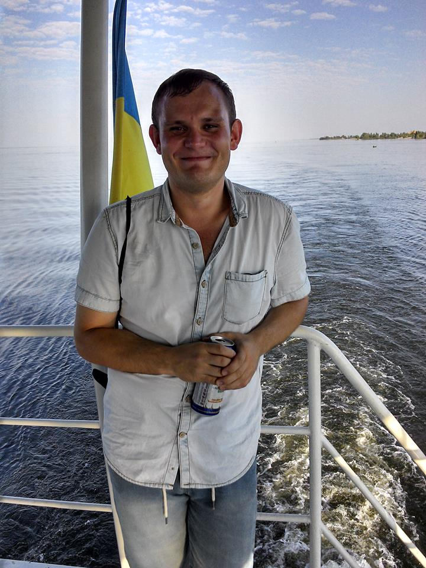

Vsevolod Lukovnikov
Front-end Developer
Hi, I'm Vsevolod. I always liked to study and to learn something new. I self-study programming a little less than a year. Previously, it had simply passion. But now I decided to become professional in this field, and for this I came to the educational courses, which was organized by Masters of Code. Thank you for the opportunity to learn.